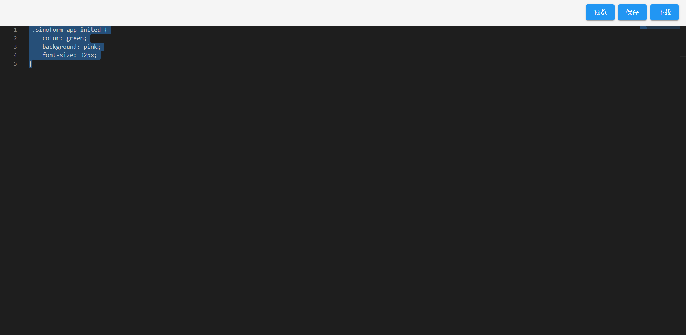
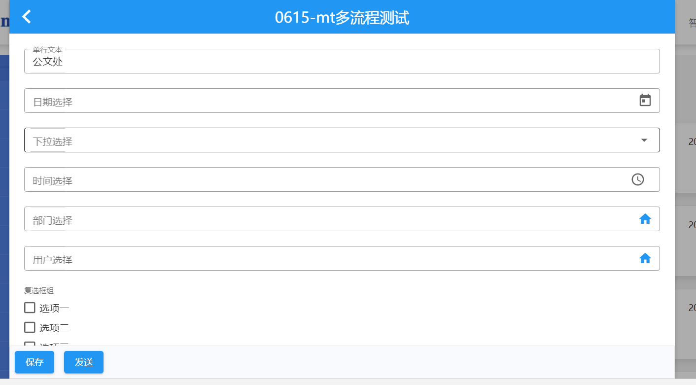
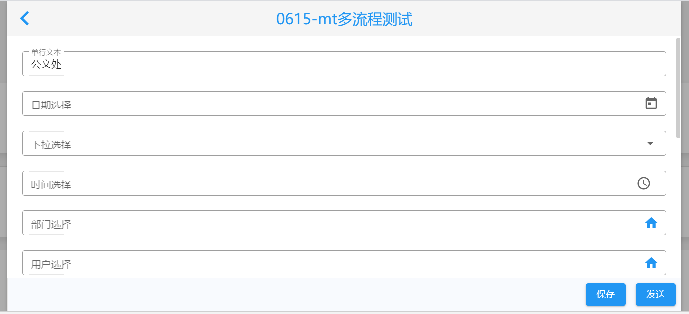

开发人员编写自定义样式
打开自定义样式编辑器
PC应用端
在表单应用页面，按住ctrl键的同时，连续单击页面5次（每次点击的间隔不能大于0.5s）显示自定义样式入口。点击表单应用页面中的自定义样式超链接，会打开一个浏览器的新标签页显示自定义样式编辑器页面。

移动端
在移动端我的表单首页，按住ctrl键的同时，连续单击页面5次（每次点击的间隔不能大于0.5s），顶部应用栏右侧会显示自定义样式入口。点击表单应用页面中的自定义样式超链接，会打开一个浏览器的新标签页显示自定义样式编辑器页面。

自定义样式编辑器功能
在自定义样式编辑器中仅支持使用css编写样式，编辑器目前支持自定义样式的预览、保存和下载和缓存。
编辑器默认会显示缓存中的样式代码，若无缓存样式，会显示服务器保存的自定义样式代码，若服务器中没有自定义样式，编辑器不显示样式代码。
页面显示

预览
点击预览按钮，会将当前编写的css应用到表单应用。开发人员可以打开表单应用中某个页面查看编写好的样式效果。
特别说明：在预览之前，需要先打开要预览的页面，再点击
预览按钮，才可以实时看到编写的样式效果。
保存
点击保存按钮，会将编辑器中编写的css保存到服务器。表单应用组件加载时，首先会从服务器中获取自定义的css，若服务器存在自定义的css代码，则应用自定义css样式。否则显示表单应用的默认样式。
下载
点击下载按钮，将当前编写的css代码以.css文件后缀保存到本地。
缓存
编辑css时，localstorage会缓存编辑中的css，只有当点击保存按钮后，将自定义样式保存到服务器成功后，才会清除localStorage中缓存的css。防止由于开发人员误关闭自定义编辑器，导致编写中样式丢失的问题。
编写自定义样式
表单起草页面的默认样式如下图：

若想将表单起草页的表单标题背景显示为灰色，表单标题和图标为蓝色；详情页面底部操作按钮显示为右对齐。按照支持自定义样式元素的className命名，应该编写如下样式代码：
预览后效果如下：

样式优先级
具有同等权值的样式，样式优先级为：内联样式(style属性定义的样式) > 内部样式(style标签定义的样式) > 外部样式(link标签或import引入的样式)。智能表单应用中组件使用styled-components来定义样式(为内部样式)，所以开发人员在编写自定义样式时，为了使自己编写的外部样式优先级高于组件默认的样式，需要编写权值更大的样式。我们的建议是编写自定义样式时，通过层级样式的编写或.className.className的方式，来提高自定义样式的优先级：